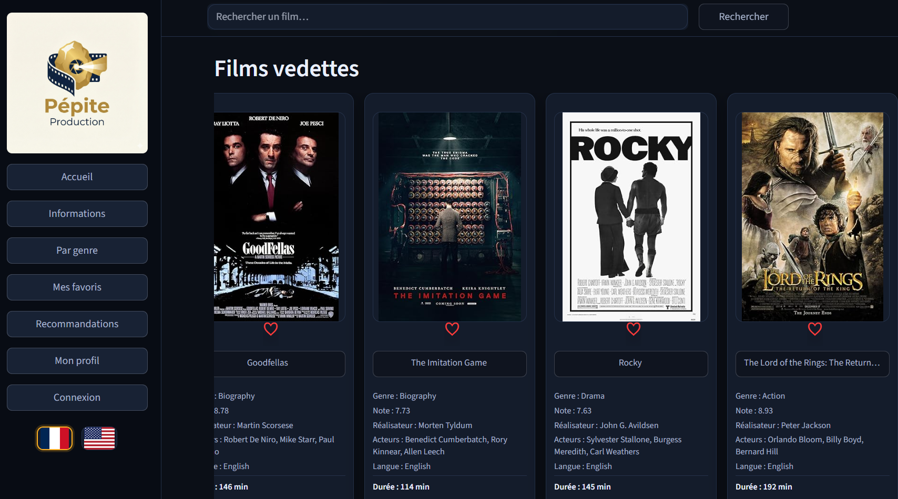

Contexte : projet scolaire - application web avec authentification, espace client et espace administrateur.
Objectif : fournir à l’admin des dashboards avec KPIs pertinents, et proposer une recommandation de films adaptée à chaque utilisateur.
Compétences démontrées : conception d’un backoffice, définition de KPIs, gestion des rôles, logique de recommandation (Machine Learning), UX d’un produit de contenu.